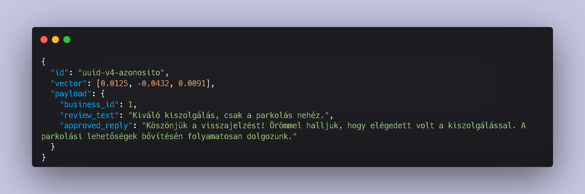
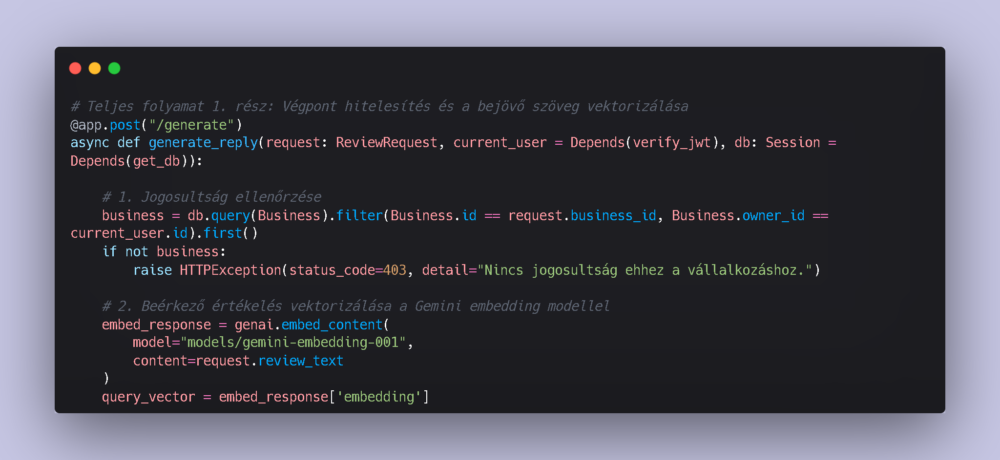
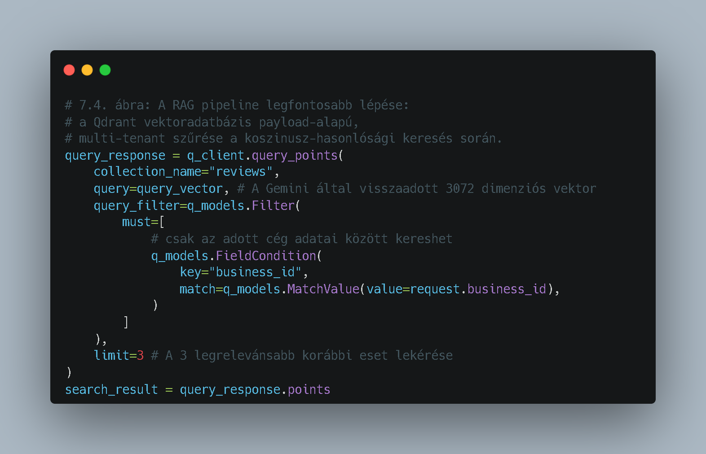
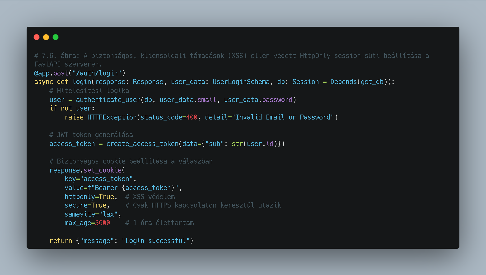
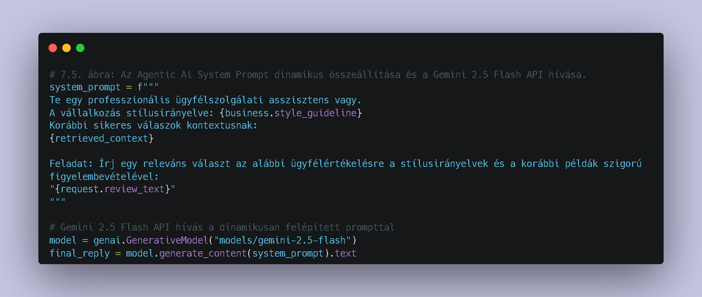
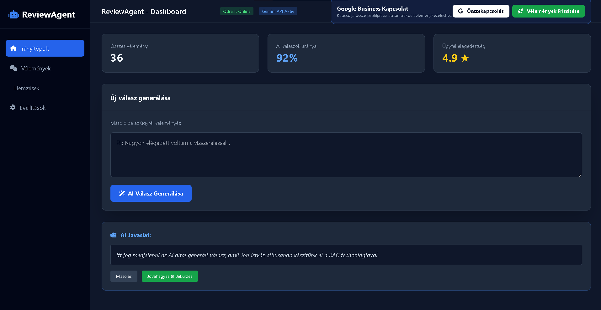
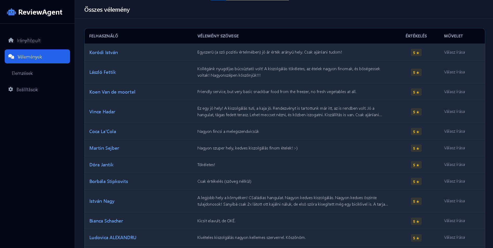
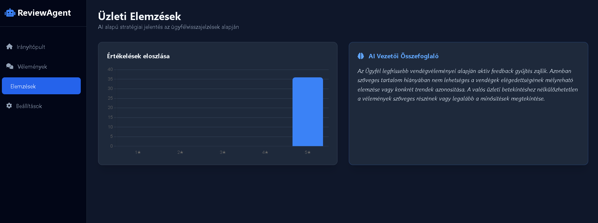

Önálló Laboratórium: Alkalmazott MI, LLM és RAG architektúrák
HALLGATÓ
Szabó Bálint
KONZULENS
Dr. Ekler Péter
A modern KKV szektor legnagyobb kihívása: az online hírnév kezelése skálázható és hiteles módon.
Egy olyan Agentic AI megoldás fejlesztése, amely RAG technológiával biztosítja a tényalapú és stílushű válaszadást.
LLM modellek tesztelése (DeepSeek, Gemma, Gemini).
Qdrant Cloud integráció és RAG pipeline kiépítése.
FastAPI backend és Tailwind dashboard fejlesztése.
Biztonsági audit (JWT, IDOR) és Cloud Deploy.
Python 3.12 és FastAPI aszinkron keretrendszer az API végpontokhoz.
Google Gemini SDK (Flash 2.5) és 3072 dimenziós embedding modellek.
Qdrant Cloud a szemantikai kereséshez és kontextus tároláshoz.
FastAPI (Kérés) → Gemini Embedding → Qdrant Vektorkeresés → Kontextus összeállítás → Gemini 2.5 Flash → Strukturált válasz.
A gemini-embedding kimenete.
A szövegeket sűrű vektorrá alakítjuk. A Qdrant koszinusz-hasonlóság alapján találja meg a releváns múltbéli válaszokat a felhőben.

business_id jogosultságot.
FieldCondition kizárólag a lekérdező cég adataira korlátozza.
HttpOnly és Secure flagekkel ellátott sütikben tároljuk.

| Metrika | Lokális (Ollama - 9B) | Felhő (Gemini API) |
|---|---|---|
| Válaszidő (TTFT) | ~42.7 mp (Lassú) | < 2.5 mp (Valós idejű) |
| Magyar nyelvi minőség | Szintaktikai hibák | Natív nyelvi szint |
| Hardver igény | 16GB RAM + Driver konfliktus | Zero-footprint SaaS |



.search() → Megoldás: Migráció az új query_points() API-ra.A Model Context Protocol (MCP) integrációja, amellyel a rendszer képes lesz közvetlenül külső CRM rendszerekből (pl. belső adatbázisok) is élő kontextust meríteni.
Kérdések és válaszok
Szabó Bálint
MSc Mérnökinformatikus hallgató
https://review-agent.agency